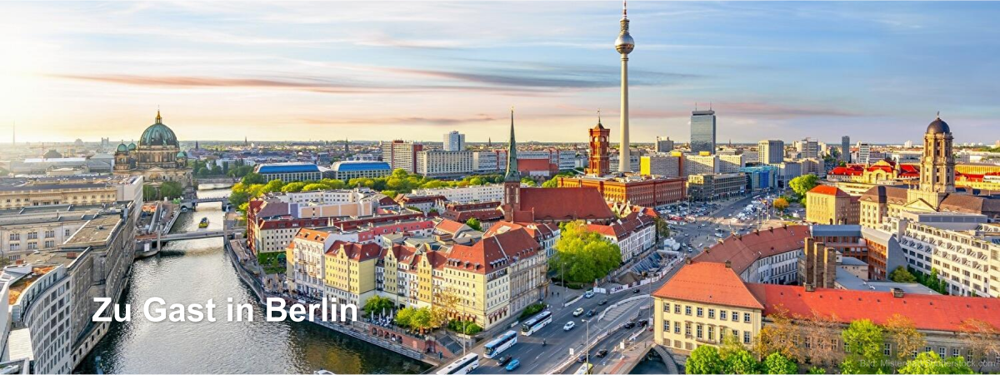
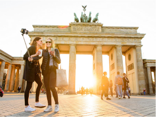
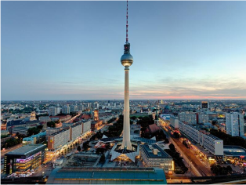
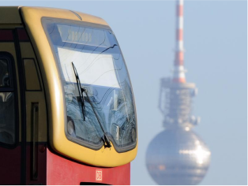
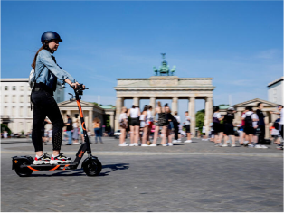
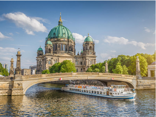
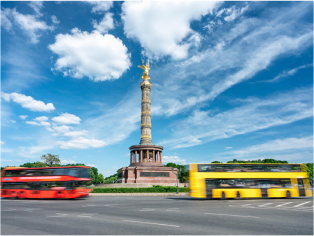
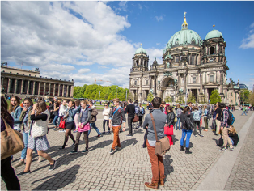
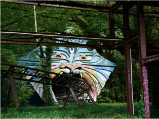
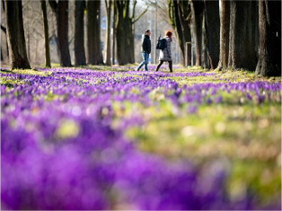

Sehenswürdigkeiten

© dpa
Top-Sehenswürdigkeiten in Berlin
Die Highlights unter den Sehenswürdigkeiten: Diese Attraktionen
müssen Berlin
mehr
© dpa
Sehenswürdigkeiten nach Thema
Die wichtigsten Sehenswürdigkeiten Berlins sortiert nach Thema,
wie Architektur, Parks, NS-Zeit und Gedenkstätten.
mehr

© visitBerlin, Foto: Wolfgang Scholvien
Alle Sehenswürdigkeiten
Berlins Sehenswürdigkeiten, Schlösser und Denkmäler mit Adresse,
Informationen, Fotos und Verkehrsverbindung.
mehr
Berlin-Informationen

© dpa
Öffentlicher Nahverkehr
Schnell und unkompliziert durch Berlin mit S-Bahn, U-Bahn, Bus und
Tram. Informationen zum Berliner Nahverkehr mit Fahrpreisen und
Liniennetzen.
mehr

© dpa
Sharing: E-Roller, Rad und Auto
Ob E-Scooter, Fahrrad, E-Roller oder Mietauto: Zahlreiche Anbieter
in Berlin bieten Sharing unterschiedlicher Verkehrsmittel an.
mehr
© dpa
Berlin-Wetter
Das aktuelle Wetter in Berlin mit Vorhersagen, Regenradar,
Unwetterwarnungen und weiteren Wetterdaten.
mehr
Touren durch Berlin

© JFL Photography - stock.adobe.com
Dampferfahrten & Schiffstouren
Berlin vom Wasser aus entdecken: Schiffstouren durch die
Innenstadt, ins Umland oder mit Party an Bord. Touren,
Anlegestellen, Tickets und
mehr

© eyetronic - stock.adobe.com
Stadtrundfahrten
Stadtrundfahrten mit dem Bus, Hop-on Hop- Hoff-Touren oder
Bustouren in Kombination mit Schiffstouren. Plus: Tipps zur selbst
organisierten Stadtrundfahrt.
mehr

© dpa
Stadtführungen
Stadtführungen und Touren mit Guide: Von Mitte bis Neukölln, von
den Highlights bis in den Kiez - Berlin entdecken für Besucher,
Touristen und Schulklassen.
mehr
Insider-Tipps
© dpa
Berlin für Abenteurer
Abenteuer in Berlin erleben: Ungewöhnliche Orte, Lost Places, neue
Perspektiven und unvergessliche Erlebnisse.
mehr
© dpa
Berlin für Romantiker
Berlin für Romantiker, Schwärmer, Himmelsstürmer, Phantasten,
Träumer und Weltverbesserer: Ideen und Orte.
mehr

© dpa
Alle Insidertipps
Insider-Tipps, ungewöhnliche Orte und neue Ideen für
Berlin-Besucher abseits der ausgetretenen Pfade.
mehr
Berlin entdecken
© dpa
Zoos & Tierparks
Tiere aus aller Welt in Berlin: Zoos, Tierparks, Streichelzoos und
öffentliche Tiergehege in Berlin.
mehr

© dpa
Parks & Gärten
Gartenkultur in Vollendung oder Wiesen, Bäume und Blumen: In
Berlins Parks und Gärten ist Platz für alles.
mehr
© dpa
Spaziergänge & individuelle Touren
Spaziergänge, Touren und Rundgänge durch Berlin: Streifzüge für
Flaneure in der Hauptstadt.
mehr